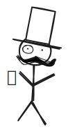

Cryptography for Developers!

Learn developer oriented cryptography concepts.
Become a reliable web developer!
Almost all programming courses ignore cryptography concepts.
This lead to developers not able to make right security decisions or right trade-offs.
Learn those hand-picked cryptography concepts that a developer must know to make informed security decisions for their web apps!
You will get to learn about:
Symmetric key encryptionRainbow tables, saltPassword based key derivation function (PBKDF-2)Cryptographic hash functionsPassword hashing
Made by the past volunteer of:

100% free. Forever!
Course author

Hi, I am Vivek, known as @vkweb around open-source.
Around 5 years back, I helped freeCodeCamp in creating their public-key cryptography curriculum. That was the time I dived deeply into public-key cryptography.
Over time I've realized that lots of developers don't understand necessary cryptography concepts due to a lack of developer-focused resource on this topic.
And when developers don't understand these concepts, they can't participate in web security discussions of web apps. Ultimately, they can't build secure web apps.
So, I decided to create this course from the ground-up. Completely focused on cryptography concepts that a developer needs to be able to understand the reasoning behind why certain techniques are used. This will enable them to stick to right practices for the security of their web apps and servers.
I hope you get **real value** out from this course.
PS: I'm always all ears for brutal & critical feedback: vivekmittalagrawal@gmail.com.
Table of contents
- Before we start (Do not skip this)
- Symmetric key encryption
- Code challenge: Caesar's cipher
- Cryptographic hash functions
- Password hashing
- Rainbow table and the salt
- PBKDF-2: slowing down
- The Diffie-Hellman key exchange
- RSA public-key encryption
- Challenge: End to end encryption
- The TLS story
- Certificate authorities rule!
- Project: Finale. 💛
Part 1 of 2:
Part 2 of 2:
I will post updates on my Twitter
when
the second part of the course gets released.
It all will remain free, forever :)